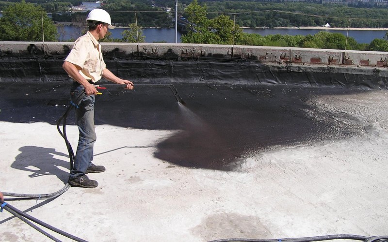

Flat roof: waterproofing
Among the roofing materials on the market the most Roll products are popular. However, they have certain drawbacks - leakage in Places of joints and the need for regular repairs. Such shortcomings are devoid of seamless Roofing materials.
Rolled materials are made from modified bitumen.
Their service life is much higher (20-25 years) due to increased resistance to atmospheric Impacts. These roofing materials are modified with styrene-butadiene-styrene (SBS) and Atactic polypropylene plastic (APP). The latter endows the roofing Ability to withstand ultraviolet radiation, and SBS gives the roofing material Plasticity, which is valuable at the time of large temperature changes. It is obvious that in most European countries are more relevant SBS-modified roofing materials.
This roofing material is polymer. Roofing Membranes are more durable and durable than bituminous materials. They are resistant to oxidation, Atmospheric phenomena, the effects of UV rays. However, this roofing material is more Expensive.
In polymeric materials, the width of the membranes is greater, which is their Distinctive feature. Their use allows you to reduce the number of seams and joints, Extends the use of this material for buildings of any configuration and Sizes.
Types of polymer roofing membranes
Differ in light weight, high elasticity, resistance to Sharp changes in temperature. Can be stacked over the existing ruberoid carpet. More Strong, but less elastic material - reinforced EPDM membranes.
For seaming use a special self-adhesive tape Without heating.
Membranes based on thermoplastic polyolefins (TVE)
Special seals are used to bond the seams with Using hot air. In their composition, such membranes have a reinforcing layer (Polyester mesh), which makes them resistant to mechanical stress, but less Elastic than EPDM membranes. The sphere of application of TPO membranes is new constructions, roofs Complex configuration, the roof, over which there are floors.
Stitches are sealed by welding with hot air.
PVC membranes are reinforced with polyester mesh, which gives them additional strength. These The membranes are available in a variety of color solutions. Are not afraid of deformation and roughness Basis.
Seamless roofing materials
Mastic
With the help of modern mastics, it is possible to repair old roofs and Erect new ones. They can be used as roofing material or as an adhesive at The device of roofing "pie" from roll materials.
Mastic is a liquid-viscous homogeneous mass, which in The result of hardening becomes a monolithic coating. Mastics are polymeric, bituminous and Bitumen-polymer. In addition, the composition of the mastic allowed the content of the solvent, Filler and various coloring additives. The key difference of this seamless roofing Material from roll materials is that they form a waterproofing layer only after Application to the surface of the roof. Other properties are similar. To improve strength Mastic roofs, they are reinforced with a glass net or glass wool. However, as a result of this The elasticity of the mastic layer will decrease. Therefore it is recommended to reinforce only certain Areas - places of junction and conjugation.
One of the main advantages of mastic roofs - in the absence of Roofing carpet joints and seams. There are disadvantages in the mastic layer. to achieve the desired Thickness of the insulating film will not be so simple, especially if the roof has a large slope or Uneven surface. Most often, careful preparation of the surface is required, or the proper The quality of the coating is achieved by increasing the consumption of the material. Any of the options leads To an increase in the cost of coverage.
Some manufacturers have already addressed this problem Mastic, having developed a method of applying mastic in two layers. The first applied layer has one Color, the second - contrast. The thickness of the second layer should be sufficient to ensure that Through it the bottom layer did not shine through.
Liquid rubber
For the production of liquid rubber, oil derivatives are used and Elastomers of natural rubber. Ready-made roofing material in the form of an emulsion can be used On the roofs of any structure to ensure their watertightness. Liquid rubber sprayed On the roof surface with the help of special equipment. Damage to the material Surface of the roof forms a single seamless polymerized membrane, water, steam and Gas-tight.
Among the shortcomings of liquid rubber is its demand for conditions Performance of work. Humidity during the application of the material and during its Cure should not exceed 50%, and temperature + 10 ° C. The moisture of Of the material to be coated - it should not be more than 30%. Liquid rubber Apply on a dry, clean and level surface.
In the process of exploitation this roofing material is the most Suffers from mechanical influences and sunlight. The membrane of liquid rubber will serve 7-10 years. Increase the operational period can be, if you protect the rubber from ultraviolet. The easiest way is to cover the surface with a light paint that does not contain solvents. Also decide The problem can be by spraying a layer of acrylic-polymer mastic.